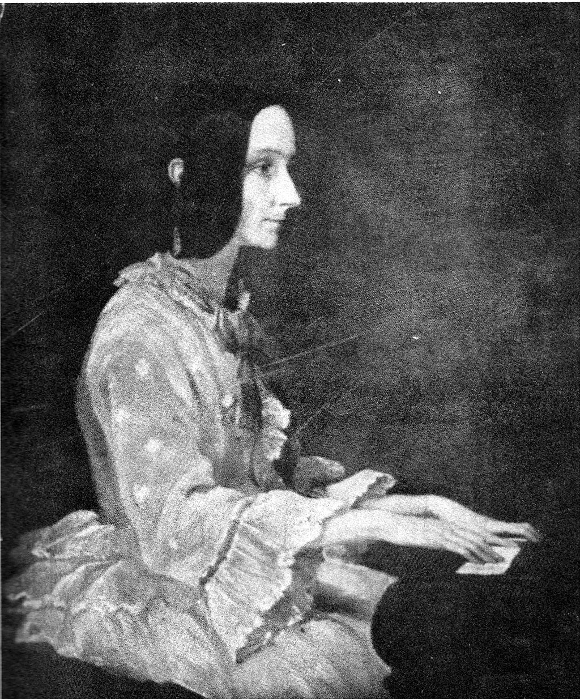

Ada Lovelace "The first female programmer" 10 December 1815 - 27 Nevember 1852
A brief description of her life and achievements
Her life and work
1815 - Born in England as the only living legitimate child of the Lord and Lady Byron
1828 When she was twelve she was obsessed with the idea of flying and attempted to create wings. "first book"
1829 - Sick as a child she experience headaches that obscured her vision and by this year she became paralyzed by about of measles
1831 - She was able to walk in crutches
1835 - she married William, 8th Baron King, becoming Lady King
1832 - when she was seventeen, her mathematical abilities began to emerge,[26] and her interest in mathematics dominated the majority of her adult life. She was privately educated in mathematics and science by William Frend, William King,[a] and Mary Somerville, the noted 19th-century researcher and scientific author. In the 1840s, the mathematician Augustus De Morgan extended her "much help in her mathematical studies"
1840s - the mathematician Augustus De Morgan extended her "much help in her mathematical studies" including study of advanced calculus topics including the "numbers of Bernoulli" (that formed her celebrated algorithm for Babbage's Analytical Engine)

1830 to 1834 - he investigated complex products of the distillation of organic substances such as coal and wood tar, discovering a number of valuable hydrocarbon compounds
1844 - she commented to a friend Woronzow Greig about her desire to create a mathematical model for how the brain gives rise to thoughts and nerves to feelings ("a calculus of the nervous system").
1842–43 - Lovelace translated the Italian mathematician Luigi Menabrea's article on Babbage's newest proposed machine, the Analytical Engine.
1852 - 27 November at the age of 36 lovelace died of an illness that lasted several months
If you would like to know more check out the wikipeadia page!